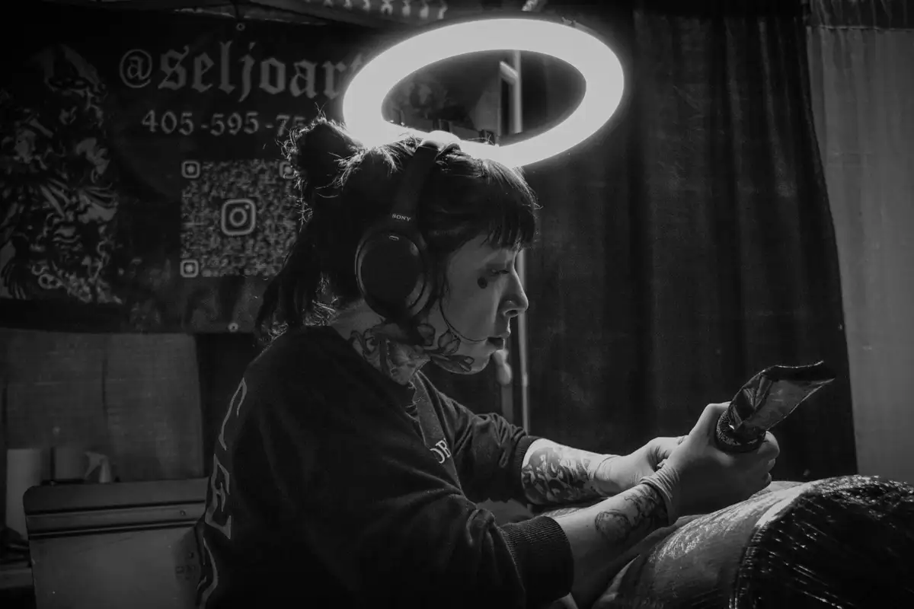

Illustrative Linework
Drawing-led tattoos where clear contours, purposeful detail, and recognizable forms carry the design.
Artist • Oklahoma City
Selena is an artist at Tornado Tattoo with a background in education and a focus on illustrative linework, thoughtful composition, and black-and-gray tattooing.

Artist approach
Selena’s published focus combines illustrative linework with black-and-gray tattooing. That means the drawing, the negative space, and the way each shape connects matter just as much as the individual details.
Her background in education supports a thoughtful, communicative approach. References can help explain the mood or visual direction, while the final design is developed around the client, body placement, and practical needs of the tattoo.
Tattoo focus
These are the areas currently highlighted in Selena’s published artist information and the kinds of ideas clients can discuss during a consultation.
Drawing-led tattoos where clear contours, purposeful detail, and recognizable forms carry the design.
Monochrome compositions shaped through line weight, contrast, open skin, texture, and controlled shading.
Custom layouts planned to fit the selected body area instead of forcing a flat drawing onto a moving form.
A consultation process that turns references, subject matter, placement, and scale into a workable tattoo direction.
Consultation process
A useful request gives Selena enough information to understand the idea and determine whether it fits her current portfolio direction.

Questions about booking Selena
Selena’s current published focus is illustrative linework, thoughtful composition, and black-and-gray tattooing. Review her Instagram portfolio and discuss the specific idea during consultation to determine fit.
Yes. References help communicate subject matter, mood, line quality, and composition. The final design should be developed for your body placement rather than copied directly from another artist’s tattoo.
Her current portfolio is available on Instagram at @seljoart.
Use the Tornado Tattoo online booking link, call the shop at (405) 601-4445, email tornadotattoookc@gmail.com, or contact the shop for current availability.
Start your project
The consultation is where the drawing direction becomes a tattoo plan designed for the person wearing it.